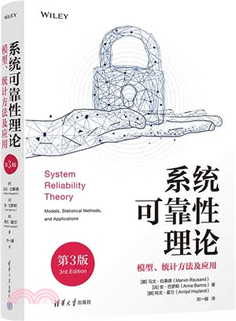

📖《系统可靠性理论》是可靠性工程领域的经典教材和参考书，由挪威科技大学 Marvin Rausand 教授等专家撰写。本书系统性地介绍了可靠性分析的理论基础、数学模型和实际应用方法。
作为 Wiley 统计学系列丛书之一，本书融合了概率论、统计学和工程学的知识，为从事系统设计、风险分析和安全工程的专业人士提供了权威的理论指导。
可靠性基础——介绍可靠性的基本概念、定义和度量指标，包括可靠度、失效率、平均故障间隔时间（MTBF）等核心参数。
系统可靠性模型——涵盖串联系统、并联系统、表决系统、网络系统等典型系统结构的可靠性建模方法，以及故障树分析（FTA）和可靠性框图（RBD）技术。
统计分析方法——详细讲解寿命数据的统计分析，包括参数估计、假设检验、非参数方法等，以及常见寿命分布（指数分布、威布尔分布、对数正态分布等）的应用。
维修与可用性——讨论预防性维修、 corrective maintenance、维修策略优化，以及系统可用性的分析方法。
实际应用——通过核电、航空航天、 offshore 等行业的案例，展示可靠性理论在工程实践中的应用。
这本书提供了完整的系统可靠性理论研究，给出了模型和统计方法，针对系统可靠性的理解等提供了非常好的理论以及实际应用的指导。
作为工程领域的专业书籍，它的价值在于理论与实践的结合。每一章都配有详细的例题和习题，帮助读者巩固理解。对于从事安全工程、风险管理工作的人来说，这是一本案头必备的参考书。
书中关于威布尔分布和故障树分析的部分尤其实用，这些方法在日常工作中经常用到。虽然数学推导有一定难度，但作者的讲解清晰有序，耐心阅读能够掌握核心要点。